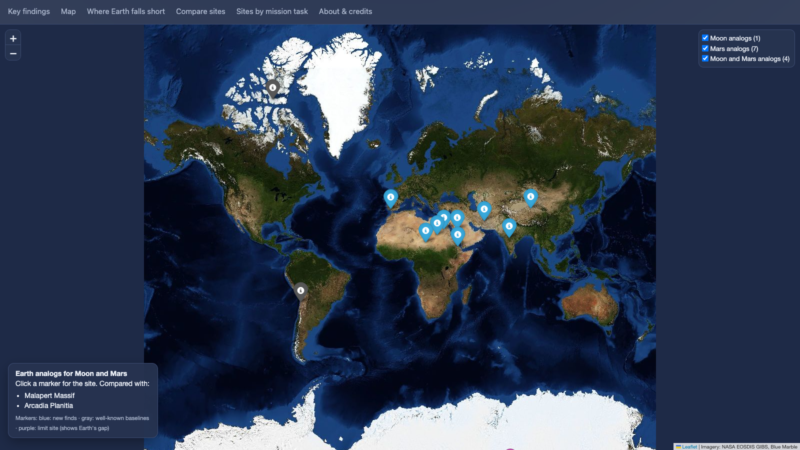

Project JES · NASA Space Apps 2026
We compared 12 places on Earth with a landing region at the Moon's south pole and an icy plain on Mars, one condition at a time.
https://emily952.github.io/spaceapps-earth-analogs/
The question
Artemis candidate landing region near the south pole. The Sun never climbs above 5.5°. Ridge-top ground reaches 47 °C.
Flat, ice-rich plain at 47.2°N, proposed for future landings. Average slope 0.36°.
12 sites

How we score
score = 1 − |Earth − target| / (largest − smallest in our data)
Data: NASA POWER, MOLA and LRO Diviner, the NASA planetary fact sheets, ESA's Copernicus elevation model and the LMD Mars dust maps. If we have no comparable number, the site says "no data". We never add scores up.
What we found
Where Earth falls short
is the lowest the Sun's highest point of the year gets anywhere on Earth. At Malapert it never rises above 5.5°.
warmer: Earth's coldest surface (-98 °C) vs the Moon's shadowed craters (-233 °C).
Low gravity, vacuum, thin air and space radiation need chambers and other methods.
Try it
https://emily952.github.io/spaceapps-earth-analogs/
Code and data: https://github.com/emily952/spaceapps-earth-analogs
Next: ground brightness (albedo), a measured Mars ground temperature, more sites.
AI tools (Claude, Claude Code, Cursor) helped with research and code. Our team chose the sites and sources and made the method decisions. No AI-generated images are used.